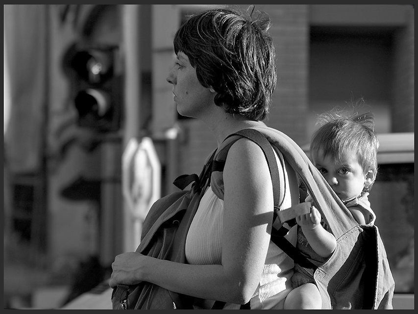

پذيرش > سایت نوشته ها > کودک و تلویزیون و مادر خوب فرمانبر پارسا
 زن در صدا و سیمای ما زن در صدا و سیمای ما

 کودک و تلویزیون و مادر خوب فرمانبر پارسا کودک و تلویزیون و مادر خوب فرمانبر پارسا
29 مهر 1387 - زن زمینی / زهره امین - نسخه قابل چاپ
روز هشتم اکتبر برابر با 17 مهر، روز جهانی کودک، مبارک!
جمعه 12 مهر ساعت یک بعد ازظهر، کانال پنج تلویزیون دارد برنامهی بچهها "رنگین کمان" را نشان میدهد.
خاله نرگس با آن صدای زیرش و داوود منفرد با اداهای بامزه دارند با بچهها ترانهای را در مورد مادر میخوانند. همراه با شعر دست میزنند و پا میکوبند و شادی میکنند.
مضمون شعر که مرتب تکرار میشود این است:
مامان جونم قدر تورو میدونم
صبح تا شب در آشپزخونه کار میکنی کار...
برای من و بابا ناهار و شام میپزی... لباسامو میشوری...
...( چند خط دیگر هم در این مضمون داشت)
به چهرههای بشاش کودکان نگاه میکنم که چهطور معصوم و ساده دل مورد هجوم تبلیغات قرار گرفتهاند که مامان یعنی "کلفتی در آشپزخانه".
در این شعر مرتب روی این تأکید میشد که کار مادر از صبح که از خواب بیدار میشود در آشپزخانه است.
مدتهاست که توجه کردهام که در تمام برنامههای بچههای رادیو و تلویزیون مادر یعنی کسی که حتما قبل از همه بیدار میشود و فوری میرود آشپزخانه و چایی میگذارد و صبحانه را میچیند و بعد همه را با مهربانی بیدار میکند. بعد بچهها را میرساند مدرسه و زود میآید ظرفها را میشوید(بین راه شیطانی نمیکند و با هیچکس سلام علیک نمیکند.فوقش سریع بدون هیچگونه شوخی و خندهای مثل یک خانم سبزی و میوه میخرد و میآید خانه)، خانه جارو میکند، تیمیکشد، لباسچرکها را میشوید،ملافهها را عوض میکند سبزیهایی که بین راه خریده پاک کند، برنج میگذارد، خورش میپزد، سالاد درست میکند. خلاصه یک ناهار خوشمزه آماده میکند و بعد از ناهار دوباره تکرار رُفتوروب و شستشو و بعد پختن شام و... و بعد از سرویس دادن به پدر(منظورم دادن شام است و دادن کنترل تلویزیون به دست با کفایت او) و... آخر از همه میخوابد.
چیزی که یادم رفت این است که این مادر حتما باید روزی سه بار هم نماز بخواند و خدا را شکر کند که چنین شوهر و بچههایی داده.
در این برنامهها از کار بیرون مادر صحبتی نمیشود. اگر هم بشود باز باید بلافاصله که از کار برگشت باز باید به آشپزخانه برود. از احساسات و سرگرمیهای مادر، تفریحاتی که احتیاج دارد، فیلمهایی که میبیند، ورزشی که دوست دارد، روزنامهای که میخواند، از گفتگو با دوستانش، از جرو بحث و اختلاف سلیقه با شوهر و... چیزی گفته نمیشود.
زن در صدا و سیمای ما باید : زن خوب ِ فرمانبرِ پارسای باشد تا اولاد را به دکتری و مهندسی و شوهر را به پادشاهی برساند و دیگر هیچ.
(باور میکنید به سخنرانی پروفسور آزمندیان- که البته من مدرک پروفسورایش را به چشم خودن ندیدهام- هم که یکبار رفتم همین شعر سعدی را در مورد زنان خواند و گفت وظیفهی زن خانهداریست)
خوب این بچه که مرتب مورد بمباران تبلیغاتی قرار میگیرد با همین عقاید بزرگ میشود. همین انتظارها را از مادر و بعدا از خواهر و بعدتر از زنش و خیلی بعد از دخترش دارد.
یادم است چند سال پیش روزی داشتم به پسر هشت سالهام یاد می دادم که احیانا اگر غذایی در یخچال نبود گرم کند، قابلمهی برنج ( خودم برنجش را شسته و رویش به اندازه کافی آب ریخته و نمک و روغن زده) را روی گاز بگذارد تا من بیایم. البته مادرم خانه پیشش بود. با قلدری گفت مامان بزرگ بگذارد به من چه؟ گفتم او مریض است و خوابیده. تنها کاری که باید بکنی گاز زیرش را با شعلهی کم روشن کنی مثل صبحها که زیر کتری را روشن میکنی برای صبحانه.
گفت اینها وظیفهی توست! من دیگر در آشپزخانه نمیروم! گفتم از کی تا حالا؟ گفت هم در مدرسه خانم معلمش گفته و هم در تلویزیون مجری برنامه کودک! گفتهاند پسرها فوقش در آوردن بشقاب و قاشق کمک کنندو همین. مرد کارش فنیست! تازه دوستانم مسخرهام کردهاند که صبحها من چایی درست میکنم. در فیلمهای بزرگسالان هم تنها کار خانهای که مرد میکند گذاشتن آشغال دم در است!
پدرم در آمد تا دوباره به او حالی کردم که کار خانه یک کار تیمیاست. همه باید مشارکت داشته باشند و و شستن ظرف و آشپزی خودش یک هنر است و مرد و زن نمیشناسد. البته از او که درس میخواند و سنش کم است انتظار کمتری دارم. با تردید قبول کرد. ولی میدانستم احتمالا دیگر از دوستانش پنهان میکند همین ده دقیقه کار در روز را.
یک بار هم بعد از دیدن یک سریال با نفرت گفت: اَه! من هرگز زن نمیگیرم.
پرسیدم چرا؟
گفت زنها همهاش در آشپزخانه ملاقهبهدست آش هم میزنند و غر میزنند و از شوهرانشان طلا و جواهر و لباس و مبلمان شیک و تلویزیون بزرگ میخواهند. خوب من میتوانم غذا از بیرون بگیرم. هم خرجم کمتر است هم اعصابم از غرغر خلاص میشود.
گفتم من که اینطور نیستم. هستم؟
گفت تو فرق داری. اینطور که در فیلمها میبینم بقیه زنها همینطوریاند.
بیشتر متاسف میشوم وقتی میبینم خود زنان هم کارهای خانه را فقط وظیفهی خود میدانند و نمیگذارند پسرشان دست به سیاه و سفید بزند. و پدرانی که یاد پسرشان میدهند که مرد باشند. مردی از نظر آنان یعنی بنشینند پشت میز تا غذا برسد! پیراهنشان شسته و اتو شود و...
و مردانی که تا از برابری زن و مرد برایشان حرف میزنی این شعرهای شاعران را میخوانند و میخندند:
فردوسی:
 زن و اژدها هر دو در خاک بـه جهان پاک از این هر دو نا پاک به زن و اژدها هر دو در خاک بـه جهان پاک از این هر دو نا پاک به
زنــــــان را همین بس بــود یک هنر نشینند وزایـــند شــــیران نـــر
زنان را ستائی ، سگان را ستای که یک سگ به از صد زن پارسای
کسی کـو بـود مــهتر انـجمن کـفن بهــتر او را ز فـرمان زن
زنـان را از ان نـام ناید بلند که پـیوسته در خـوردن وخـفـتنند
ناصر خسرو:
زنـان چـون ناقصان عقل و دینند چرا مردان ره آنان گزینند-
مگوی اسرار حال خویش بـا زن که یابی راز فاش از کوی وبرزن
بـه گفتار زنان هرگز مکن کار زنان را تا توانی مرده انگار
رهی معیری:
الهی! در کـمند زن نیفـتی واگر افتی، به روز من نیفتی
زنان در مکر وحیلت گونه گونند فـریبـند وزبـانند و فسوننـد
نه تنها نامراد آن دل شکن باد کـه نـفرین خـدا بر هر چه زن باد!
اوحدی کرمانی:
چون بـه فرمان کنی ده وگیر نــام مردی مــبر، به ننگ بمیر
زن چــو بیرون رود بزن سخـتش خـود نمـائی کند ، بکن رختـش
ور کـند سر کشی، هـلاکش کن آب رخ میبرد ، بـه خاکش کـن
سعدی:
زن خوب فرمانبر پارسا کند مرد درویش را پادشاه....
باید اینطور مردان را چنان به پادشاهی رساند که تا ابد فراموش نکنند!
از روز کودک شروع کردم و به کجا رسیدم
امیدوارم بتوانیم کاری کنیم تا کودکان سرزمینمان در محیطی سالم و پر از صلح و صفا رشد کنند . محیطی عاری از خشونت و تبعیض و نابرابری. کودکانی که فرصت درسخواندن و همینطور بازی و تفریح را داشته باشند. کودکانی که برای تمام بیماریها بیمه باشند و به اندازهی کافی در رفاه باشند تا هیچ کودکی از بیپولی و گرسنگی نمیرد.
زن زمینی
ارسال به
بالاترین
،
توییتر
،
فریندفید
،
فیسبوک
در همين بخش :
 یک خبر تلخ؟ یک قانونشکنی؟ یک تصمیم بخشنامهای جدید؟ یک خبر تلخ؟ یک قانونشکنی؟ یک تصمیم بخشنامهای جدید؟
چرا بایست به سکسوالیته پرداخت؟ / نفیسه آزاد
آزارجنسی خانگی؛ «قربانی» نه، «نجات یافته»
زنان، بزرگترین بازندگان بهار عرب
سانسور از دیدگاه جنسیتی/الهه امانی
ديگر بخش ها :
طرح یک میلیون امضا
|
مقالات
|
سایت نوشته ها
|
اخبار
|
گزارش كمپين
|
گفت و گو
|
علیه سکوت
|
كوچه به كوچه
|
نامه های شما
|
گزارش ویژه
|
گفتگو با اعضا
|
ویژه سالگرد کمپین
|
تصویر برابری
|
دل آرام علی
|
تریبون
|
مقالات
|
تاریخ شفاهی
|
خارج از چارچوب
|
کتابخانه
|
درباره کمپین
|
کمپین در شهرها
|
کمپین در بند
|
صدای تغییر
|
ویژه 22 خرداد
|
لایحه حمایت از خانواده
|
گالری
|
عشا مومنی
|
امیر یعقوبعلی
|
خدیجه مقدم
|
راحله عسگری زاده و نسیم خسروی
|
پروین اردلان،جلوه جواهری، مریم حسین خواه، ناهید کشاورز
|
زینب پیغمبرزاده
|
سعیده امین، سارا ایمانیان، محبوبه حسین زاده، ناهید کشاورز و همایون نامی
|
احترام شادفر
|
نسیم سرابندی زاده،فاطمه دهدشتی
|
وبلاگ مهمان
|
پرونده خرم آباد
|
دستگیری ها
|
مریم مالک
|
پرستو اللهیاری
|
مهرنوش اعتمادی
|
سمیه رشیدی
|
Other Languages
|
همراهان
|
«فراخوان کمپین ده روز با بهاره هدایت»
| English
|